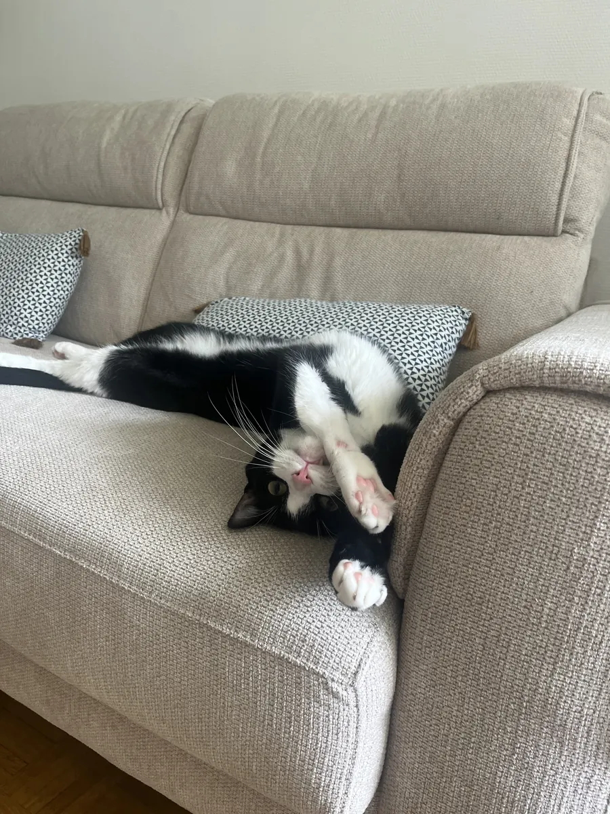
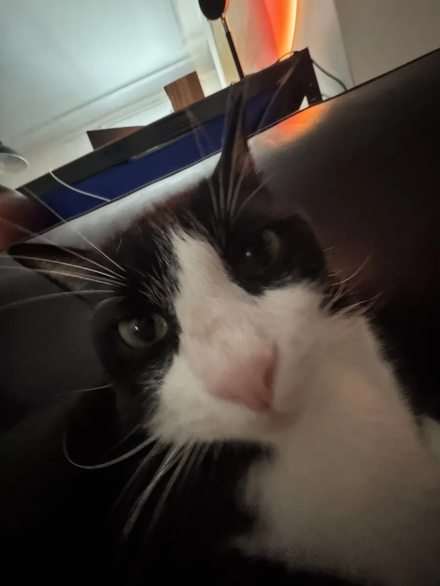
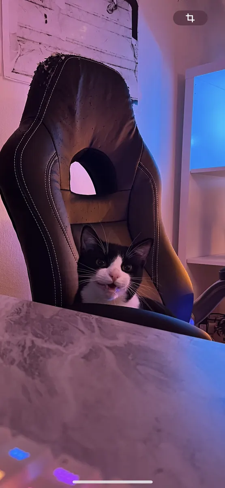
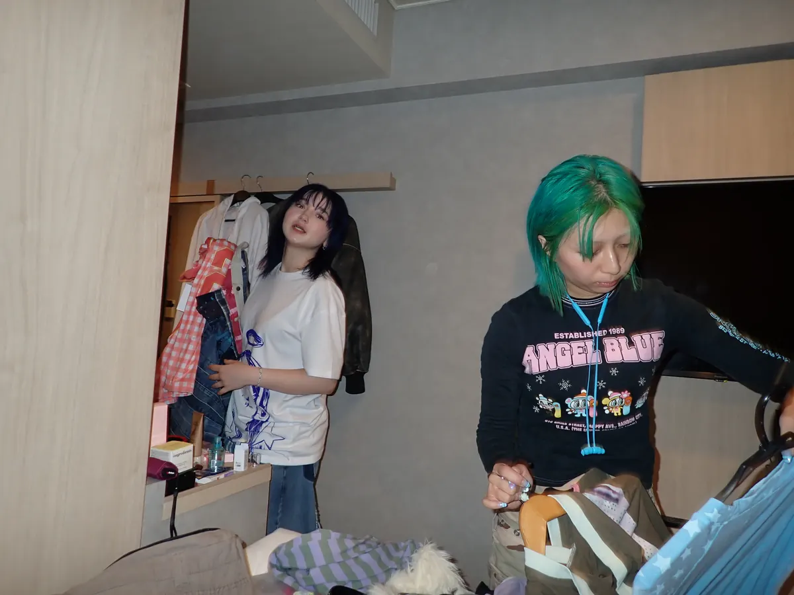
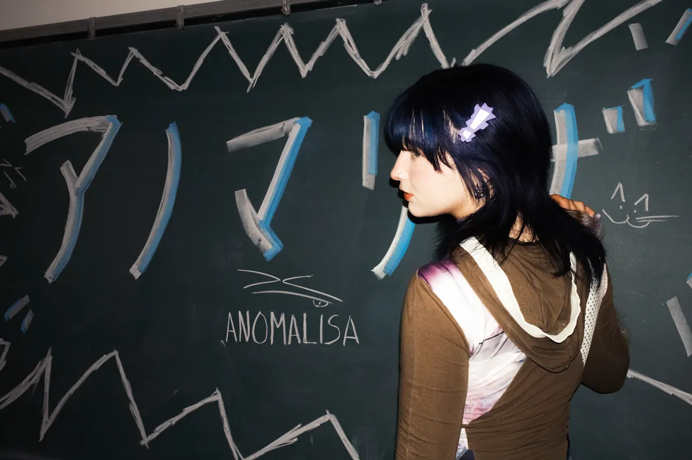
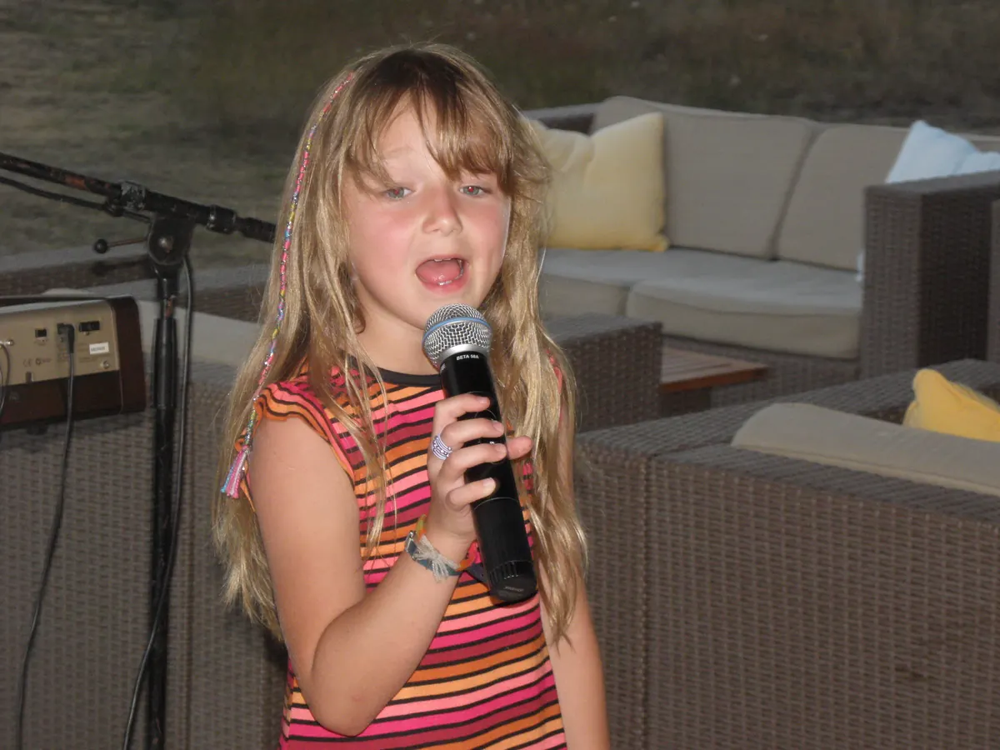
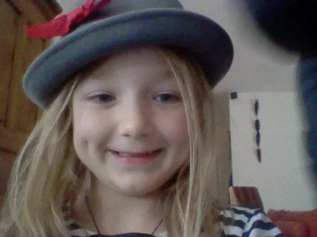
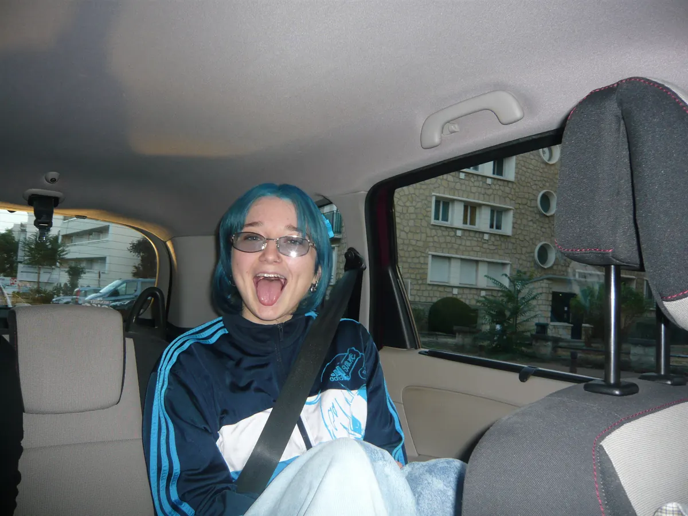
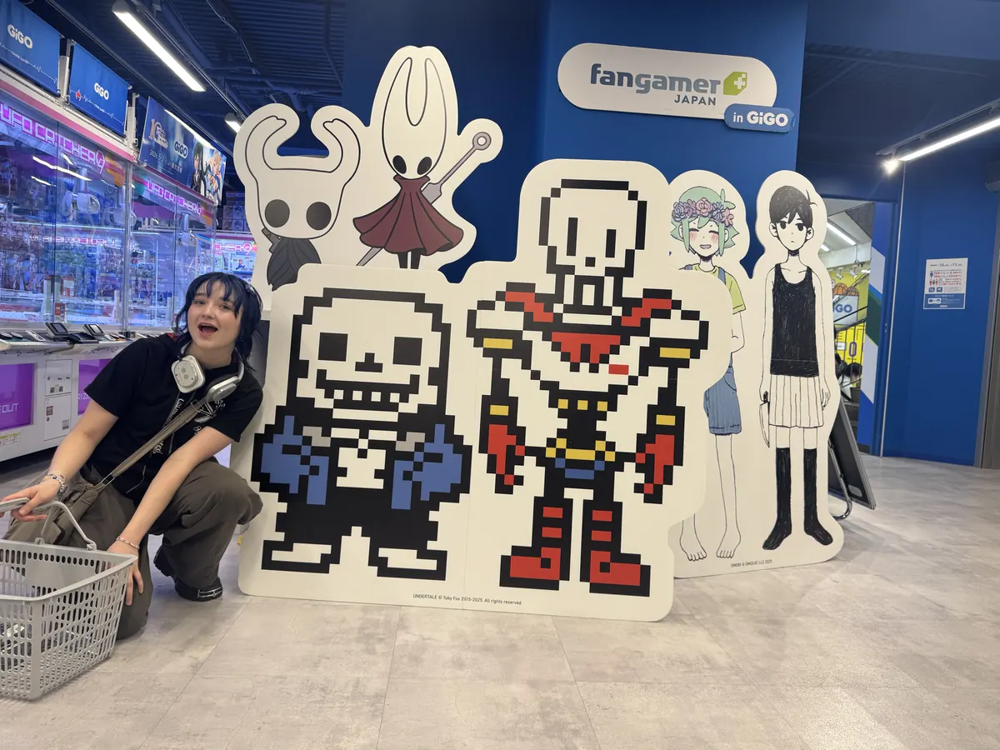

il te faut le code. il est quelque part sur ce site… regarde bien les pubs 👀
bienvenue dans la pièce cachée. ce qui se passe ici reste ici.
25/08 · 22:41
les maquettes (chut)
BOOM voilà des maquettes secrètes, ce sont des sons qui sortiront
probablement jamais, ou ptet que dans 10ans je retomberais dessus et j’en
ferais l’un des plus gros bangers de toute ma carrière, qui sait...
anecdote : le son « comment tu t’appelles » je l’ai fais IVRE MORTE
(à ne pas reproduire...), j’étais rentrée de soirée et j’avais écouté ilona
en BOUCLE sur le chemin du retour donc ça m’a inspiré ça^^
23/08 · 15:12
benben 🐱
c mon chat, je l’aime de tout mon coeur, g même un tatouage de lui
sur ma jambe...



22/08 · 19:05
backstage anomalisa 📸
l’une des meilleures expériences de ma vie, c’était ma première fois
au japon er c’était FOU
anecdote : de base je déteste tourner des clips parce que je cringe
assez facilement quand je dois faire de l’acting, mais là j’ai trop trop
kiffé :3!!


20/08 · 01:37
deux de plus 🎧
ET BIM, encore des maquettes, ptet que celle là j’en ferais un truc
qui sait...
j’aimerai bien acheter des platines un jour et jme dis que ces
maquettes finiront peut être dans un DJ set peaufiné par mes soins^^
17/08 · 14:02
archives : moi petite
ça me fait tjrs cho au coeur de voir des photos, celle où je chante
c fou genre le micro fait deux fois la taille de ma tête wtf?? c trop
trop mimi
la deuxième photo c aussi la preuve vivante que j’ai tjrs porté des
chapeaux #weirdkid #tobechingeistobefree


16/08 · 23:58
dump sans contexte


🧷
15/08 · 22:30
les premières 🎧
ce son là c’est dekonnekte, c’est un son qui devait être dans l’ep à
la base MAIS je le trouvais pas assez bien donc il fini sur ce site, feel
free to le télécharger illégalement et l’écouter en boucle si vous l’aimez
bien, je vous l’offre :3!
15/08 · 21:00
bienvenue
YAYYY BRAVO T’AS TROUVÉ LA PAGE SECRÈTE!!
ici j’ai mis des petits insight, des backstages (sorry les mots
sortent en anglais tout seul c trop relou c parce que j’écris ces mots en
pleine tournée avec TLTA^)!!
BREF, kiffez bien, jsuis trop hypée que vous découvriez ces petites
parties de moi (surtout pour les maquettes hihihi :3!!) 🤫